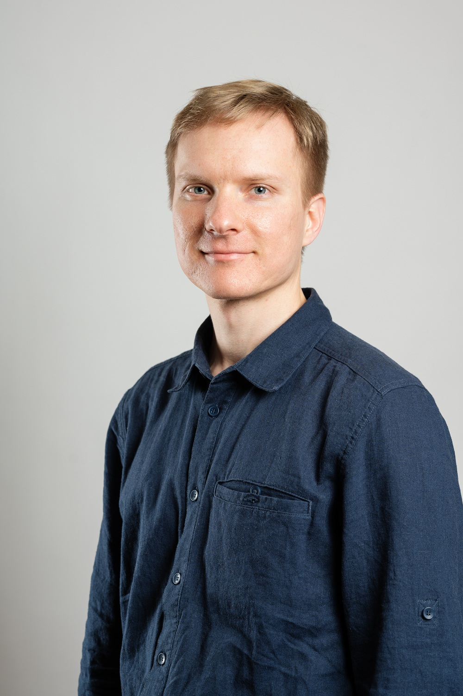

Ivan Osinnii, Ph.D.
Discovery Postdoc — Computational & Systems Biologist
Novartis Biomedical Research
Biography
I am a Discovery Postdoc in computational and systems biology at Novartis Biomedical Research in Basel, Switzerland. In my current work, I apply bulk and single-cell RNA-seq alongside SomaScan proteomics to correlate molecular profiles with clinical outcomes. I collaborate closely with multidisciplinary teams to investigate the mechanisms and biomarkers of tendinopathy, osteoarthritis, and tissue regeneration using statistical modeling, machine learning, and bioimaging approaches.
Previously, I was a Postdoctoral Researcher in the Department of Biomedicine at the University of Basel / University Hospital Basel (2023–2024), where I studied the gut-liver axis in Metabolic Dysfunction-Associated Steatotic Liver Disease (MASLD), performing scRNA-seq analyses of mucosal-associated innate-like T cells, multivariate modeling of patient microbiota dynamics, and bioimage quantification of intestinal barrier integrity. I earned my Ph.D. in Cell and Systems Biology at the University of Zurich (2017–2022) in the group of Prof. Erik C. Böttger, investigating how ribosomal mistranslation shapes proteostasis, ER stress, and mitochondrial function via transcriptomics, metabolomics, and fluorescence microscopy.
My core passion is transforming complex clinical and biological data into actionable insights through exploratory data analysis, rigorous hypothesis testing, and interactive data visualization (R/Bioconductor, Python, UNIX/HPC, Quarto, Shiny). Outside of research, I enjoy playing guitar, practicing yoga daily, mountain hiking, climbing, and participating in Toastmasters and the local Ski and Mountain club.
Interests
- Age-Related & Musculoskeletal Diseases
- Chronic Inflammatory Diseases
- Tissue Regeneration & Fibrosis
- Computational Biology & Multi-Omics Integration
- Proteostasis & Mitochondrial Biology
- Statistical Modeling & Data Visualization
Education
-
PhD in Cell and Systems Biology, 2022
University of Zurich, Switzerland
-
MSc in Biotechnology (with Distinction), 2014
National University of Life and Environmental Sciences of Ukraine, Kyiv
-
BSc in Biotechnology, 2013
National University of Life and Environmental Sciences of Ukraine, Kyiv
Experience
Discovery Postdoc
Aug 2024 – PresentNovartis Biomedical Research · Basel, Switzerland
- RNA-seq and SomaScan proteomics integration to correlate genomic and proteomic signatures with clinical outcomes.
- Investigating mechanisms and biomarkers of tendinopathy and osteoarthritis using statistical, machine learning, and imaging approaches.
Postdoctoral Researcher
Jan 2023 – Feb 2024Department of Biomedicine, University of Basel / University Hospital Basel
- Investigation of Metabolic Dysfunction-Associated Steatotic Liver Disease (gut-liver axis).
- Single-cell RNA-seq analysis of Mucosal-Associated Innate-like T cells in human liver and blood.
- Multivariate linear modeling of patient microbiota dynamics and automated bioimage analysis of gut barrier tight junctions.
PhD Researcher
May 2017 – Jun 2022Institute of Medical Microbiology, University of Zurich · Switzerland
- Multi-tissue transcriptomics (RNA-seq) and untargeted LC-MS metabolomics analysis in mistranslating mutant mouse models.
- Characterization of unfolded protein response (UPR) silencing, ER-mitochondria proteostasis, and cellular aging phenotypes.
Research Associate
Jan 2015 – Nov 2016Zabolotny Institute of Microbiology and Virology · Kyiv, Ukraine
- Studied antiviral properties of $\text{CeO}_2$ nanoparticles in vivo and conducted GC-MS lipidomic sample preparation.